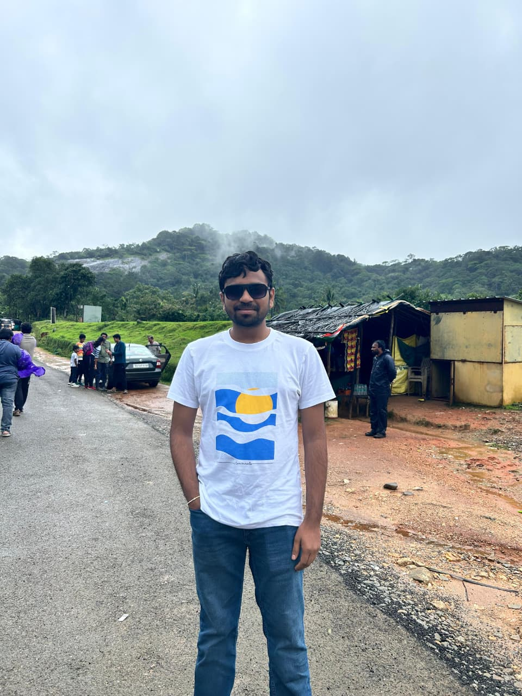

Finance & Accounting
Financial reporting, accounting, reconciliations, MIS and finance processes built around accuracy and clarity.
Finance × Technology × AI
A qualified Chartered Accountant with practical experience across audit, accounting, taxation and financial reporting, with a strong interest in using technology and AI to make finance smarter and more efficient.
Numbers that tell
the story
Client engagements
Industries
Inventory audited
Employees' payroll
I enjoy working where finance, business and technology meet.
My professional foundation comes from two years of articleship across audit, accounting, taxation, compliance and financial reporting. I have worked with clients across software, pharmacy, manufacturing, government, real estate and other sectors.
What excites me now is the next layer of finance. I am interested in AI, automation, process improvement and technology that can reduce repetitive work and help finance teams make better decisions.
Practical audit & finance experience
Independent client responsibility
Curiosity for AI & automation
Financial reporting, accounting, reconciliations, MIS and finance processes built around accuracy and clarity.
Practical experience across statutory, concurrent, stock and process audits, along with GST and TDS compliance.
Interested in process improvement, ERP work, data migration and building finance workflows that scale better.
Exploring practical applications of AI and automation to remove repetitive work and create more useful finance operations.
From articleship to becoming a Chartered Accountant, every stage added a different perspective to how finance works.
Started building practical experience across audit, accounting, taxation and compliance.
Worked across multiple industries and audit engagements, with increasing responsibility for client deliverables.
Handled client responsibilities, payroll, TDS compliance, reconciliations and financial data migration work.
Building on finance fundamentals while exploring technology, AI, automation and business transformation.
A few examples from my professional experience and areas I want to explore further.
Finance Operations
Worked on accounting, reconciliations, financial reporting and MIS activities across client engagements.
Business Transfer
Supported the migration of more than three years of financial data during a business transfer.
Future of Finance
Exploring ways to automate recurring finance work, reporting and operational workflows using technology.
When I'm away from work, I enjoy travelling, discovering new places and watching movies.

Have an idea, opportunity or simply want to connect?
I'm always happy to connect with people working across finance, business and technology.